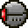

Probe
| Drops | |
|---|---|
| Coins: | 0 |
| Item | Rate |
| | 100% |
| Probe | |
|---|---|
|  | |
| Statistics | |
| Type | Flying Enemy |
| AI Type | Flying |
| Damage | 25 pink laser 50 melee |
| Max Life | 200 |
| Defense | 20 |
The Probe is an enemy that spawns from one of The Destroyer red lit segments. It fires lasers both from inside the Destroyer and detached from its master.Probes will only detach from the destroyer after it has taken a fair amount of damage.
History
- 1.1: Introduced.
- Early mentions: Terraria 1.1 Trailer 25th November 2011